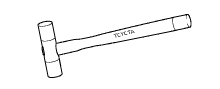

Rear Axle Hub & Bearing Assembly LH (4WD) Preparation [Removal]
Print
SST
09930-00010
Drive Shaft Nut Chisel
Service Tools
09011-2C590
Socket Wrench
30mm/12p

09051-1C110
Plastic-faced Hammer
Lubricants and Others
Rope or wire